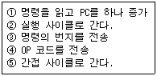
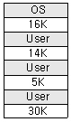

정보처리산업기사 (1999-06-20 기출문제)
1과목: 데이터 베이스
1. 키가 아닌 모든 속성이 기본키에 충분한 함수적 종속을 만족하는 정규형은?
- 1NF
- 2NF
- 3NF
- 4NF
(정답률: 60%)

2. 정규화의 의미로 틀린 것은?
- 함수적 종속성 등의 종속성 이론을 이용하여 잘못 설계된 관계형 스키마를 더 작은 속성의 세트로 쪼개어 바람직한 스키마로 만들어 가는 과정이다.
- 좋은 데이터베이스 스키마를 생성해 내고 불필요한 데이터의 중복을 방지하여 정보 검색을 용이하게 할 수 있도록 허용해준다.
- 정규형에는 제1정규형, 제2정규형, 제3정규형, BCNF형, 제4정규형, 제5정규형 등이 있다.
- 어떠한 Relation구조가 바람직한 것인지, 바람직하지 못한 Relation을 어떻게 합쳐야 하는지에 관한 구체적인 판단기준을 제공한다.
(정답률: 50%)
3. SQL의 DROP문에 관한 설명 중 잘못된 것은?
- 해당 Table에 삽입된 Tuple들도 없어진다.
- 해당 Table에 대해 만들어진 Index가 없어진다.
- 해당 Table에 대해 만들어진 View가 없어진다.
- 해당 Table에 참조관계가 있는 Table이 없어진다.
(정답률: 45%)
4. 관계형 모델의 개체 무결성 규칙에 대한 설명으로 가장 적합한 것은?
- 기본 Relation에서 기본키의 어떤 성분도 Null일 수 없다.
- 기본키가 복합키일 때 기본키의 모든 개별적 값이 널이 아닐 필요성은 없다.
- 관계형 DB에서 식별할 수 없는 어떤 것의 정보를 기록하는 것이 가능하다.
- 개체 무결성 규칙은 기본키 및 대체키에도 적용된다.
(정답률: 69%)
5. 화일의 구조 결정시 고려해야 할 사항으로 거리가 먼 것은?
- 파일저장 매체의 접근 특성
- 자료처리의 주기
- 주기억장치의 크기
- 자료처리 순서
(정답률: 66%)
6. 관계형 Data Base에서 Relation의 특성으로 거리가 먼 것은?
- 튜플 간에 순서가 없다.
- 속성 간에는 순서가 없다.
- 한 Relation에 포함된 Tuple들은 모두 상이하다.
- 한 Relation에 포함된 속성값은 모두 상이하다.
(정답률: 56%)
7. 한 조직체에 필요한 DATA를 수집, 저장해 두었다가 필요시에 처리해서 의사결정에 유용한 정보를 생성하고 분배하는 수단을 무엇이라 하는가?
- 자료처리 시스템
- 정보 시스템
- 전문가 시스템
- 응용 시스템
(정답률: 47%)
8. 개체에 대한 설명으로 가장 부적절한 것은?
- 실세계에 존재하는 것이다.
- 속성을 포함한다.
- 구별 가능해야 한다.
- 관계에는 참여할 수 없다.
(정답률: 72%)
9. 상위 하나의 레코드에 대하여 하위의 레코드가 복수 대응하고, 하위 하나의 레코드에 대해서 상위레코드도 복수 대응하는 데이터베이스 구조는?
- 망 구조
- 계층 구조
- 관계 구조
- 결합 구조
(정답률: 21%)
10. SQL 언어의 CREATE TABLE문에 포함될 수 없는 것은?
- 속성의 NOT NUll 제약조건
- 속성의 타입 변경
- 속성의 초기값 지정
- CHECK 제약 조건의 정의
(정답률: 41%)
11. ISAM(Indexed Sequential Access Method) 파일 구조에서 사용되는 인덱스가 아닌 것은?
- 트랙 인덱스
- 디스크 인덱스
- 실린더 인텍스
- 마스터 인텍스
(정답률: 71%)
12. 어떤 릴레이션에 존재하는 튜플의 개수를 무엇이라 하는가?
- 기수(Cardinality)
- 차수(Degree)
- 도메인(Domain)
- 속성(Attribute)
(정답률: 47%)
13. 노드의 삽입 작업은 선형리스트의 한쪽 끝에서 제거 작업은 다른 쪽 끝에서 수행되는 자료구조는?
- 스택
- 큐
- 트리
- 데큐
(정답률: 49%)
14. 데이터베이스에서 자료의 중앙 통제시 가장 큰 장점은?
- 데이터베이스 관리자가 필요 없게 된다.
- 저장된 자료의 일관성 유지가 용이하다.
- 데이터의 중복이 전혀 없게 되어 경제적이다.
- 보안에 대한 위협이 없어진다.
(정답률: 65%)
15. 데이터베이스 시스템에서 복구 및 병행 시행시 처리되는 작업의 논리적 단위를 일컫는 것은?
- COMMIT
- ROLLBACK
- TRANSACTION
- POINTING
(정답률: 40%)
16. 다음의 자료 구조 중 비선형 자료구조는?
- 리스트
- 스택
- 큐
- 그래프
(정답률: 69%)
17. 분산 환경에서 서로 다른 데이터베이스를 연결하여 사용할 수 있게 하는 미들웨어는?
- ODBC
- RPC
- CS Talk
- TCP/IP
(정답률: 47%)
18. SQL 문장에서 group by절에 의해 선택된 그룹의 탐색 조건을 지정할 수 있는 것은?
- having
- order by
- union
- join
(정답률: 56%)
19. DBMS를 사용했을 때의 장점으로 거리가 먼 것은?
- 표준화의 범기관적 시행
- 단순한 예비와 회복 기법
- 데이터의 보안 보상이 용이
- 데이터 무결성 및 일관성 유지
(정답률: 41%)
20. 스키마에 관한 내용으로 틀린 것은?
- 현실 세계의 특정한 한 부분의 표현으로서 특정 데이터 모델을 이용해서 만들어진다.
- 한 조직에서 관심 있는 부분의 데이터 구조로 기술하는 언어 또는 그래프 표현의 집합이다.
- 시간에 따라 불변인 특성을 갖는다.
- 스키마는 데이터의 구조적 특성을 의미하여 인스턴스에 의해 규정된다.
(정답률: 22%)
2과목: 전자 계산기 구조
21. 연산자의 기능이 아닌 것은?
- 함수 연산 기능
- 번지 기능
- 전달 기능
- 제어 기능
(정답률: 66%)
22. 전가산기(full adder)의 합의 동작을 얻을 수 있는 것은?
- AND
- OR
- 배타적 OR
- 다수결
(정답률: 28%)
23. 십진수 956에 대한 BCD(Binary Coded Deciamal)는?
- 1001 0101 0110
- 1101 0110 0101
- 1000 0101 0110
- 1010 0110 0101
(정답률: 79%)
24. 논리연산기능으로만 나열된 것은?
- MOVE, AND, COMPLEMENT
- ROTATE, ADD, SHIFT
- MOVE, EXCLUSIVE OR, SUBTRACT
- MULTIPLY, AND, DIVIDE
(정답률: 54%)
25. stack과 관계있는 명령어 형식은?
- one-address 명령어
- two-address 명령어
- three-address 명령어
- zero-address 명령어
(정답률: 65%)
26. 마이크로 동작의 시퀀스를 결정하여 주는 신호는?
- 사이클 신호
- 누산기
- 레지스터
- 제어신호
(정답률: 38%)
27. 메이저 스테이트(Major state)를 명령이 패치(Fetch)사이클에서 사용하지 않는 것은?
- Program Counter
- Stack Pointer
- Memory Buffer Register
- Memory Address Register
(정답률: 46%)
28. 인터럽트가 발생할 수 있는 상황인 것은?
- 입·출력 장치 동작에 CPU의 기능이 요청 될 때
- 실행 중인 프로그램의 일부를 변경하고자 할 때
- 컴퓨터 조작자가 처리의 순서를 바꾸고자 할 때
- 정전 통보시간 5분전
(정답률: 50%)
29. 메모리 용량이 총 4096워드이고, 1워드가 8비트라 할 때 PC(Program Counter)와 MBR(Momory Buffer Register)의 비트수를 바르게 나타낸 것은?
- PC=8비트, MBR=12비트
- PC=12비트, MBR=8비트
- PC=8비트, MBR=8비트
- PC=12비트, MBR=12비트
(정답률: 64%)
30. 정보를 기억장치에 기억 시키거나 읽어 내는 명령을 한 후 부터 실제로 정보를 기억 또는 읽기 시작할 때까지 소요되는 시간을 무엇이라 하는가?
- Seek Time
- Processing Time
- Access Time
- Idle Time
(정답률: 46%)
31. 동시에 여러 개의 입·출력 장치를 제어할 수 있는 채널은?
- 멀티플렉서 채널
- Duplex 채널
- 레지스터 채널
- Simplex 채널
(정답률: 73%)
32. 기억장치를 분류 할 때 Computer 내부에 있는 주기억장치를 무엇이라고 부르는가?
- Main Storage
- Accumulator
- Magnetic Memory
- Register Memory
(정답률: 40%)
33. 다음 설명 중 옳지 않은 것은?
- 인터럽트가 발생하면 중앙처리장치의 모든 기능은 중지된다.
- 사이클 스틸의 발생시 중앙처리장치의 상태 보존이 필요없다.
- 사이클 스틸은 DMA 인터페이스에 의해서 이루어진다.
- 인터럽트 발생시 중앙처리장치의 상태 보존이 필요하다.
(정답률: 30%)
34. 마이크로프로그램에 대한 설명 중 옳지 않은 것은?
- 마이크로프로그램은 소프트웨어라고 하는 것보다 하드웨어적인 요소가 많아 펌웨어(firmware)라고도 불린다.
- 제어기를 구성하는 방법으로 마이크로프로그램이 이용될 수 있다.
- 마이크로프로그램은 전자계산기의 제작 단계에서 컨트롤 스토레이지(Control Storage) 속 에 저장한다.
- 마이크로프로그램은 마이크로 명령으로 형성되어 있다.
(정답률: 35%)
35. 컴퓨터의 Fetch 사이클 시퀀스를 옳게 나타낸 것은?

- ③-①-④-②-⑤
- ③-①-④-⑤-②
- ③-④-①-②-⑤
- ①-③-④-②-⑤
(정답률: 29%)
36. BCD 코드에서의 가중치(Weight)는?
- 2, 4, 2, 1
- 8, 4, 2, 1
- 4, 3, 2, 1
- 103,102,101,100
(정답률: 55%)
37. 연산의 종류를 unary연산과 binary연산으로 구별할 때 binary연산을 하는 연산자가 아닌 것은?
- Complement
- OR
- AND
- Exclusive OR
(정답률: 77%)
38. 다음 중에서 음수를 표시하는 방법이 아닌 것은?
- 1의 보수(1's Complement)
- 부호 및 크기(Signed Magnitude)
- 2의 보수(2's Complement)
- 10의 보수(10's Complement)
(정답률: 55%)
39. 자기테이프 record 크기가 80자로서 블록(block)의 크기가 2400자일 경우 블록 팩터(block factor)는?
- 40
- 30
- 25
- 20
(정답률: 69%)
40. OSI이란 다음 중 어느 것의 약자인가?
- Open Systems Interface
- Open Systems Interconnection
- Operating System Interface
- Operating Systems Interconnection
(정답률: 34%)
3과목: 시스템분석설계
41. 모듈이 가지는 특징에 대한 설명으로 잘못된 것은?
- 작성을 분담하여 독립적으로 작성할 수 있다.
- 사용할 변수를 새로 정의하지 않고 상속하여 사용할 수 있다.
- 서로 연결하여 한꺼번에 컴파일 함으로써 수행속도가 빠르다.
- 변수의 선언을 효율적으로 하여 메모리를 유용하게 쓸 수 있다.
(정답률: 44%)
42. 20매로 구성된 디스크 팩에서 한 면에 200개의 Track을 사용할 수 있다면 실린더는 몇 개가 되는가?
- 200개
- 400개
- 2000개
- 4000개
(정답률: 52%)
43. Merge를 올바르게 설명한 것은?
- 파일 내의 레코드를 Descending Sort한다.
- 여러 개의 파일을 2개의 파일로 편성하는 작업이다.
- 2개 이상의 파일을 합하여 일정한 규칙에 따라 하나의 파일로 작성한다.
- 같은 시간에 2개의 입력장치로 자료를 읽어 파일을 만드는 작업이다.
(정답률: 65%)
44. 마스터 파일의 데이터를 트랜잭션 파일에 의해 추가, 삭제, 교환하여 새로운 마스터 파일을 작성하는 처리 패턴을 무엇이라 하는가?
- 병합(Merge)
- 갱신(Update)
- 대조(Matching)
- 변환(Conversion)
(정답률: 76%)
45. 리스트 편성 화일의 특징으로 옳지 못한 것은?
- 화일의 구조가 복잡하다.
- 처리효율이 떨어진다.
- 포인터 값의 변경으로 레코드의 추가가 어렵다.
- 기억장소의 낭비가 크다.
(정답률: 39%)
46. 원시 전표 설계시 고려하여야 할 사항으로 잘못 설명된 것은?
- 원시 전표는 기입이 쉽도록 해야 한다.
- 가능한 기입량을 적게 한다.
- 일정한 순서에 따라 차례로 기입될 수 있게 한다.
- 전표 번호나 발행 주문과 같은 고정 항목은 기입자가 반드시 기입하도록 한다.
(정답률: 44%)
47. 코드화 대상 항목을 소정의 기준에 따라 대분류, 소분류로 구분하고 순서대로 번호를 부여하는 방식은?
- 기호 코드
- 십진 분류식 코드
- 표의 숫자식 코드
- 그룹 분류식 코드
(정답률: 66%)
48. 한 모듈내에 있는 구성요소의 기능적 관련성을 평가하는 기준으로서, 다른 모듈과의 결합도에 영향을 주는 것은?
- 구조도표
- 결합도
- 설계구조도
- 응집도
(정답률: 64%)
49. 모듈 결합도에 해당되지 않는 기능은?
- 기능 결합
- 내용 결합
- 공통 결합
- 외부 결합
(정답률: 47%)
50. 입력 데이터가 기록되는 디스켓, 자기 테이프, 디스크, OMR 등의 규격을 결정하는 것은 어느 단계인가?
- 입력 매체의 설계
- 입력 원표의 설계
- 화일 구조의 설계
- 저치 단계의 설계
(정답률: 72%)
51. 객체지향 시스템에서는 객체가 시스템을 구성하는 기본 단위인데, 이런 객체 중에는 같은 특성을 갖는 객체들이 많다. 이와 같이 같은 특성을 갖는 객체를 표현한 것을 무엇이라 하는가?
- 속성
- 클래스
- 메시지
- 인스턴스
(정답률: 64%)
52. 시스템의 기본요소 중 처리된 결과를 측정 및 평가하여 목표 도달 여부를 체크하고, 불충분한 경우 재 입력과정에 포함되는 요소는?
- 프로세싱(Processing)
- 제어(Control)
- 피드백(Feedback)
- 입력(Input)
(정답률: 77%)
53. 개개의 모듈에서 테스트를 시작하고, 점차 이것들을 맞추어 테스트한 후 최종적으로 프로그램의 전체 테스트를 행하는 테스트 방식은?
- 상향 테스트 방식
- 단위 테스트 방식
- 하향 테스트 방식
- 통합 테스트 방식
(정답률: 31%)
54. 4 코드의 기능과 필요성에 대한 설명으로 잘못된 것은?
- 자료의 분류집계를 쉽게 한다.
- 자료의 구별과 특정자료의 추출이 용이하다.
- 자료의 내용을 쉽게 볼 수 있도록 한다.
- 정보의 표현 방법을 단순화한다.
(정답률: 27%)
55. 자기테이프에 사용하는 데이터 형식 중에서 경제성이 높고 처리속도가 빠르며 프로그램 작성이 쉬운 방법은?
- 비블록화 고정길이 레코드(Unblocking Fixed Length Record)
- 블록화 고정길이 레코드(Blocking Fixed Length Record)
- 비블록화 가변길이 레코드(Unblocking Variable Length Record)
- 블록화 가변길이 레코드(Blocking Variable Length Record)
(정답률: 63%)
56. 구조적 분석의 효과로 거리가 먼 항은?
- 시스템을 분할 할 수 있다.
- 분석자와 사용자간의 의사소통 용이하다.
- 상향식 원리를 적용하기 때문에 분석의 중복성이 배제할 수 있다.
- 전체 시스템 일관성 있게 이해 할 수 있다.
(정답률: 62%)
57. 입력 데이터의 오류발생 원인 중 인접한 좌우 자리를 바꾸어서 발생하는 에러는?
- 사본 에러
- 전위에러
- 이중 전위 에러
- 랜덤 에러
(정답률: 69%)
58. 새로운 시스템 완성 후에 심사되는 평가의 방법으로 적당하지 않는 것은?
- 이용부분의 만족도 분석
- 시스템 분석가의 만족도 분석
- 프로그램 정확성과 효율성 분석
- 개발비의 운용비용의 분석
(정답률: 53%)
59. 구체화된 새로운 시스템이 본래의 요구를 만족하는가를 평가하는 기준으로 거리가 먼 것은?
- 가격
- 처리시간
- 기능
- 신뢰성
(정답률: 69%)
60. 프로그램 설계서 작성으로 인한 기대효과와 거리가 먼 항은?
- 프로그래머의 인사 이동시 결함을 방지할 수 있다.
- 시스템의 수정, 유지보수가 간단하게 이루어진다.
- 비용이 절감되어, 장기 계획을 수립할 수 있다.
- 컴퓨터의 기종 변경시 프로그램의 생산성이 떨어진다.
(정답률: 76%)
4과목: 운영체제
61. 페이지 기법에서 옳지 않은 사항은?
- 페이지 크기가 작을수록 더 많은 페이지가 존재한다.
- 페이지가 클수록 더 큰 페이지 테이블 공간이 필요하다.
- 페이지 크기가 작을 경우 우수한 Work Set을 가질 수 있다.
- 페이지 크기가 클수록 참조되는 정보와는 무관한 많은 양의 정보가 주기억장치에 남게 된다.
(정답률: 47%)
62. UNIX 시스템의 특징으로 볼 수 없는 것은?
- UNIX 시스템은 사용자에 대해 대화형 시스템이다.
- UNIX 시스템은 다중 작업 시스템(Multi-tasking System)이다.
- UNIX 시스템은 파일 구조는 단층 구조 형태이다.
- UNIX 시스템은 다중 사용자(Multi-User) 시스템이다.
(정답률: 63%)
63. 다중 프로그래밍 시스템에서 실행되는 프로세스가 너무 많아 처리 속도에 문제가 발생 할 경우, 시스템 운영자(operator)가 취할 수 있는 가장 적절한 방법은?
- 일부 낮은 우선순위의 프로세스를 중단시킨다.
- 일부 낮은 우선순위의 프로세스를 죽인다.
- PM을 실시한다.
- 교착 상태가 발생하였는지를 점검한다.
(정답률: 44%)
64. 프로세스 스케줄링 방법 중 실행 시간 추정과 선점 기능 때문에 스케줄러가 복잡해지고 남은 계산 시간들을 저장해 놓아야 하는 단점을 보완한 대화식 작업에 적합한 프로세스 스케줄링 방법은?
- HRN
- SRT
- SJF
- FIFO
(정답률: 45%)
65. 클라이언트/서버 모델 설명으로 거리가 먼 것은?
- 프로그램의 모듈성과 융통성을 증대시킨다.
- 서버는 공유된 다양한 시스템 기능과 자원을 제공해야 한다.
- 공유되는 중앙 컴퓨터가 모든 클라이언트/서버를 관리한다.
- 다중 사용자 시스템은 사용자들 간에 CPU를 공유하기 위해 시분할된 단일 컴퓨터 시스템으로 구성된다.
(정답률: 28%)
66. 하나의 프로세스가 자주 참조하는 페이지의 집합을 의미하며, 이런 페이지 집합이 적재되어 프로세스는 한동안 페이지 폴트 없이 실행될 수 있다. 이런 페이지 집합을 무엇이라 하는가?
- 워킹 셋
- 구역성
- 스래싱
- 단편화
(정답률: 59%)
67. 파일 접근 행렬(access-matrix)는 무슨 목적으로 만든 것인가?
- 압축
- 스케쥴링
- 할당
- 보호
(정답률: 29%)
68. 교착 상태가 발생할 수 있는 조건이 아닌 것은?
- 점유 및 대기
- 비선점
- 상호 배제
- 진행
(정답률: 74%)
69. 프로그램과 이를 이용하는 I/O 장치와의 속도차를 극복하기 위한 방법으로 하드디스크가 중재하는 방식을 무엇이라 하는가?
- Spool
- Polling
- Cycle Steal
- Buffer
(정답률: 33%)
70. 처리기 상호 연결 기법 중 공유 버스형에 대한 설명으로 틀린 것은?
- 버스는 한 시점에 단지 하나의 전송만을 취급 할 수 있다.
- 버스에 이상이 생기면 그 부분만 사용될 수 없다.
- 시스템의 전체 교신량이 전송률에 의한 제한을 받는다.
- 시스템이 바빠지면 버스 사용은 성능 효율을 저하시킨다.
(정답률: 34%)
71. 프로세스 제어블록(PCB)에 포함되지 않는 것은?
- 프로세스의 현재 상태
- 우선 순위
- 프로세스 식별자
- 프로세스의 CPU 사용율
(정답률: 46%)
72. 사용자 Password에 대한 설명이 아닌 것은?
- 추출 가능한 전화번호, 생년월일용으로는 구성하지 않는 것이 바람직하다.
- 암호가 짧을수록 추측에 의한 암호 발각 가능성이 희박하다.
- 암호는 자주 변경하는 것이 바람직하다.
- 불법 액세스를 방지하는데 사용한다.
(정답률: 68%)
73. 디스크 할당 기법으로서 링크를 이용한 기법에 관하여 기술한 것이 잘못된 것은?
- 외부 단편화가 발생하지 않는다.
- 각 파일은 디스크 블록의 연결된 리스트이다.
- 직접 접근을 효율적으로 지원한다.
- FAT(File Allocation Table)는 이 기법의 변형이다.
(정답률: 22%)
74. 기억장치의 동적 분할 방식에 대한 설명으로 올바르지 않은 것은?
- 단편화 현상이 발생하지 않는다.
- 기억장소 활용률이 높아진다.
- 고정분할 방식에 비해 실행될 프로세스 크기에 대한 제약이 완화된다.
- 미리 크기를 결정하지 않고 실행할 프로세스의 크기에 맞게 기억 장소를 분할하기 때문에 가변분할 기억 장소 배당 방식이라고도 한다.
(정답률: 44%)
75. 개방형 시스템(Open System)의 특징이 아닌 것은?
- 구조가 공개되어 있다.
- 제품의 공급업자가 많다.
- 표준이 정해져 있다.
- 라이센스 비용이 비싸다
(정답률: 75%)
76. 가상기억장치의 페이지 교체 알고리즘 중에서, 각 페이지마다 계수기를 두어 현 시점에서 볼 때 가장 오래 전에 사용된 페이지를 교체하는 것은?
- FIFO(First-In First-Out)
- LIFO(Last-In First-Out)
- LRU(Least Recently Used)
- LFU(Least Frequently Used)
(정답률: 58%)
77. 그림과 같은 기억장소에서 두 번째 공백인 14K의 작업공간에 13K의 작업을 할당할 수 있는 기억장치 배치 전략은?

- 최초 적합(First-Fit)
- 최적 적합(Best-Fit)
- 최악 적합(Worst-Fit)
- 세 가지 방법 모두
(정답률: 71%)
78. UNIX 시스템에서 운영체제의 핵심이 되는 부분으로서 프로세서 관리, 입·출력관리, 파일관리 등을 하는 곳은?
- 파일 시스템
- 커널(Kernel)
- 파이프(Pipe)
- 필터(Filter)
(정답률: 62%)
79. 인터럽트 종류와 발생원인에 대한 설명 중 거리가 먼 것은?
- 기계검사 인터럽트는 기계에 고장이 생겼을 때 발생한다.
- 재시작 인터럽트는 수행중인 프로세스가 0으로 나누어진다든지, 기타 허용되지 않은 명령어을 실행할 때 발생한다.
- 외부 인터럽트는 인터럽트 시계에서 일정한 시간이 만기가 된 경우 발생한다.
- 입출력 인터럽트는 입·출력 하드웨어가 발생시킨다.
(정답률: 36%)
80. 세마포어(Semaphore)에 관한 설명 중 틀린 것은?
- 상호배제 문제를 해결하기 위하여 사용된다.
- 정수의 변수로서 양의 값만을 가진다.
- 여러 개의 프로세스가 동시에 그 값을 수정하기 못한다.
- 세마포어에 대한 연산을 처리 도중에 인터럽트 되어서는 안된다.
(정답률: 35%)
5과목: 정보통신개론
81. VAN에서 적용하는 4개의 계층 구조로 적합한 것은?
- 물리 계층-데이터 링크 계층-네트워크 계층-전달 계층
- 응용 계층-표현 계층-세션 계층-전달 계층
- 물리 계층-매체 접근 제어 계층-논리 링크 제어계층-네트워크 계층
- 기본 통신 계층-네트워크 계층-통신처리 계층-정보 처리 계층
(정답률: 23%)
82. 동기식 전송방식의 구성 형식은 동기문자와 제어정보, 데이터 블록으로 구성되는데 이러한 구성형식을 무엇이라 하는가?
- 패리티
- 프레임
- 플래그
- 싸이클
(정답률: 43%)
83. 운영체제(UNIX)를 구성하는 요소에 해당되지 않는 것은?
- Directory
- Kernel
- Core
- Utility Program
(정답률: 45%)
84. Presentation 계층에서 제공되는 기능은?
- 흐름 제어
- 동기 제어
- 데이터 압축
- 분산 데이터 베이스 액세스
(정답률: 37%)
85. 베이스 밴드 전송 방식에 해당되지 않는 것은?
- 단류 NRZ방식
- 복류 NRZ방식
- CMI방식
- DSB방식
(정답률: 43%)
86. Protocol의 기본 요소가 아닌 것은?
- 구문
- 의미
- 계층
- 타이밍
(정답률: 47%)
87. 8위상 변조와 2진폭 변조를 혼합하여 변복조장치 전송 속도가 1200baud/sec인 경우 비트 속도(bps)는?
- 1200
- 2400
- 3600
- 4800
(정답률: 50%)
88. HDLC 프로토콜의 기본 기능이 아닌 것은?
- 단방향, 반이중, 전이중 모두 사용 가능하다.
- BYTE 방식 프로토콜이다.
- GO-BACK-N ARQ 에러 제어 방식이다.
- 데이터 링크 형식은 point-to-point, Multi- point, Loop, 모두 가능하다.
(정답률: 62%)
89. 공중 통신 회선에 교환 설비, 컴퓨터 및 단말기 등을 접속시켜 새로운 부가 기능을 제공하는 통신망은?
- LAN
- VAN
- ISDN
- WAN
(정답률: 57%)
90. ISDN을 위한 교환기의 필요조건이 아닌 것은?
- 아날로그형으로 한다.
- 패킷 교환 방식으로 한다.
- 분산 처리 네트워크로 한다.
- 축적 Program 제어형으로 한다.
(정답률: 35%)
91. PCM 방식에서 양자화 revel을 126단계로 구분한다면 2진 부호로 부호화 하는 경우 몇 자리가 필요한가?
- 5
- 7
- 8
- 9
(정답률: 46%)
92. 정보통신 시스템의 기본 구성 요소로 보이지 않는 것은?
- 통신 회선
- 컴퓨터(단말장치)
- 신호 변환기
- 구내 교환기
(정답률: 63%)
93. 비패킷형 단말기들을 패킷교환망에 접속이 가능하도록 데이터를 패킷으로 조립하고 수신측에서는 분해 해주는 H/W 및 S/W는?
- PAD
- PMS
- PS
- NCC
(정답률: 42%)
94. 전용회선을 이용하지 않는 통신서비스는?
- FAX
- TELETEXT
- ARS
- TELEX
(정답률: 43%)
95. 정보통신을 위해 한 시스템이 다른 시스템과 통신을 원활하게 수행할 수 있도록 해주는 통신 규약은?
- 인터페이스
- 통신 소프트웨어
- 통신 프로토콜
- 통신 처리
(정답률: 66%)
96. ISDN(Integrated Service Digital Network)에 관한 설명 중 옳지 않은 것은?
- 임차한 통신 회선 설비에 컴퓨터를 접속, 다양한 응용 서비스와 정보의 부가가치를 향상시킨다.
- 이용자의 통신망간에 인터페이스와 디지털 접속 등을 제공하는 종합 서비스망이다.
- 통신망의 경제성과 효율성을 증대시키고 통신처리 기능을 고도화시킨다.
- 하나의 통신망에 접속되며, 디지털 전송 기술을 이용하여 데이터, 음성, 화상 정보를 송수신할 수 있다
(정답률: 43%)
97. 어떤 신호 f(t)가 의미를 지니는 최고의 주파수보다 2배 이상의 속도의 균일한 시간 간격으로 채집된다면 이 채집된 데이터는 원하의 신호가 가진 모든 정보를 포함한다는 이론은 어느 것인가?
- 표본화
- 양자화
- 부호화
- 이진화
(정답률: 35%)
98. 아날로그 데이터를 전송하기 위해 디지털 형태로 변환시키고 또 이러한 디지털 형태를 원래의 아날로그 데이터로 복구시키는 장치를 무엇이라 하는가?
- 모뎀
- 코덱
- 멀티플렉서
- 카운터
(정답률: 30%)
99. 정보 통신 시스템의 이용 면에서 거리가 가장 먼 것은?
- 거리와 시간의 극복
- 대형 컴퓨터의 공동 이용
- 분산 처리 방법 활용
- 공장 자동화 시스템의 공동 이용
(정답률: 39%)
100. 주파수분할 다중화(FDM) 방식에서 보호대역(Guard Band)이 필요한 이유는?
- 주파수 대역폭을 넓히기 위함이다.
- 신호의 세기를 크게 하기 위함이다.
- 채널 간섭을 막기 위함이다.
- 많은 채널을 좁은 주파수 대역에 쓰기 위함이다.
(정답률: 60%)
2NF는 기본키가 아닌 모든 속성이 기본키에 대해 완전 함수적 종속을 만족하는 정규형입니다.
즉, 기본키가 아닌 속성이 기본키의 일부분에만 종속되는 경우에는 2NF를 만족하지 못합니다.
그러나 2NF는 이러한 문제를 해결하기 위해 설계된 것이 아니므로, 기본키가 아닌 속성이 기본키 전체에 대해 함수적 종속을 만족한다면 2NF를 만족합니다.
따라서, 이 문제에서는 기본키가 아닌 모든 속성이 기본키에 대해 함수적 종속을 만족하므로 2NF를 만족합니다.